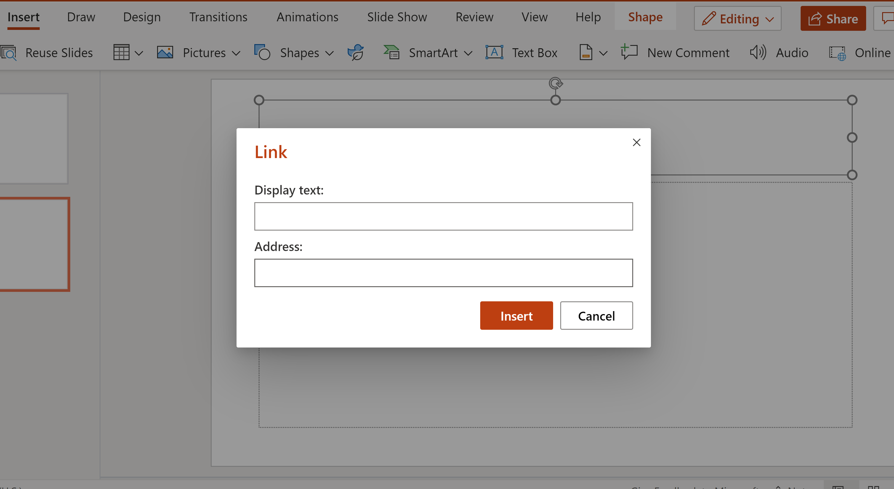
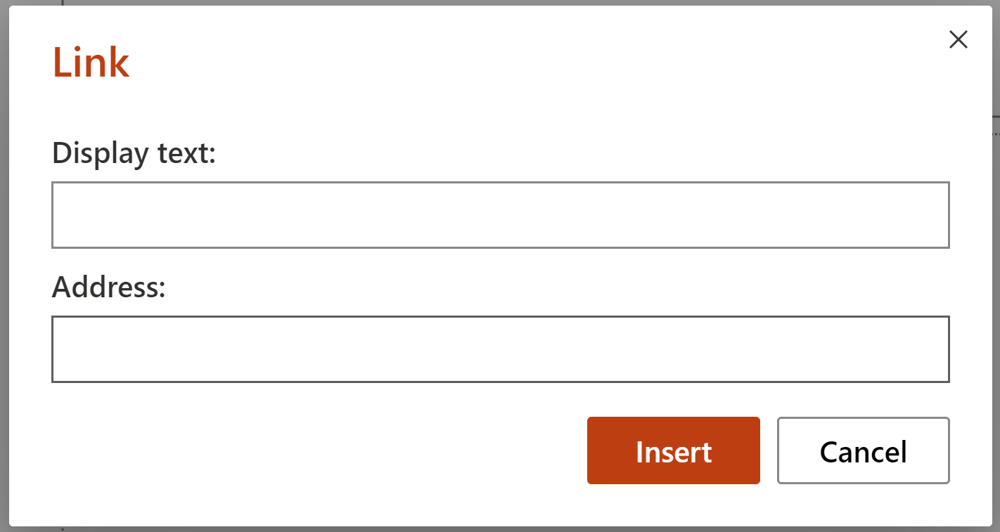
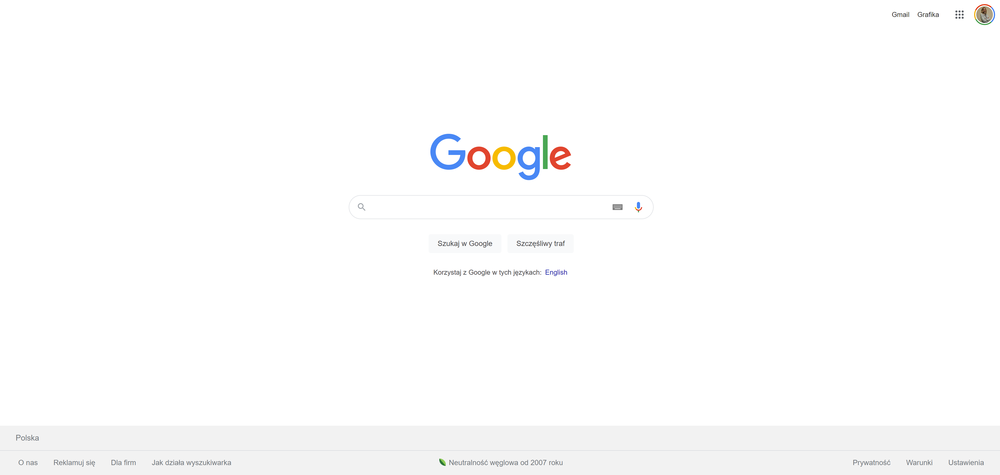
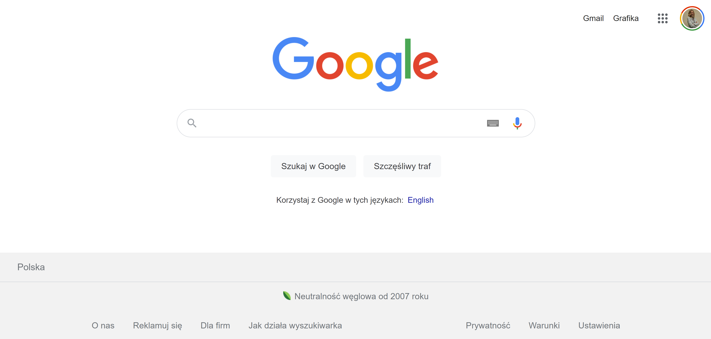
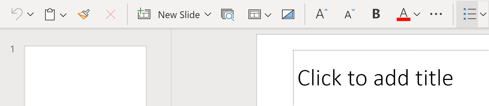
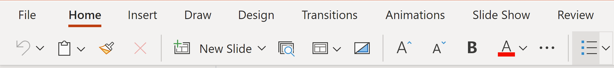
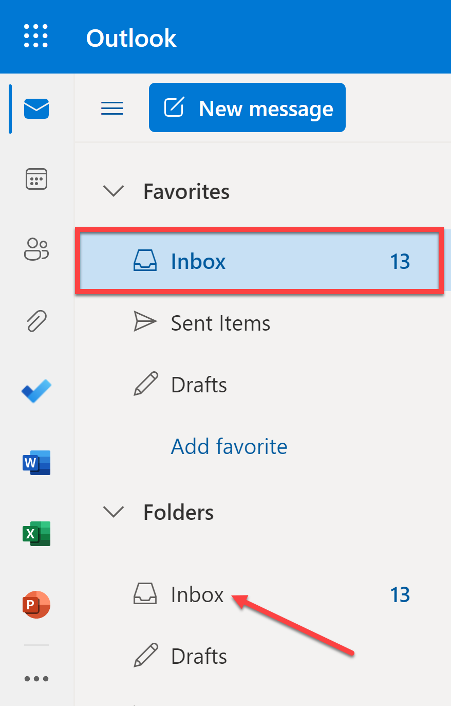
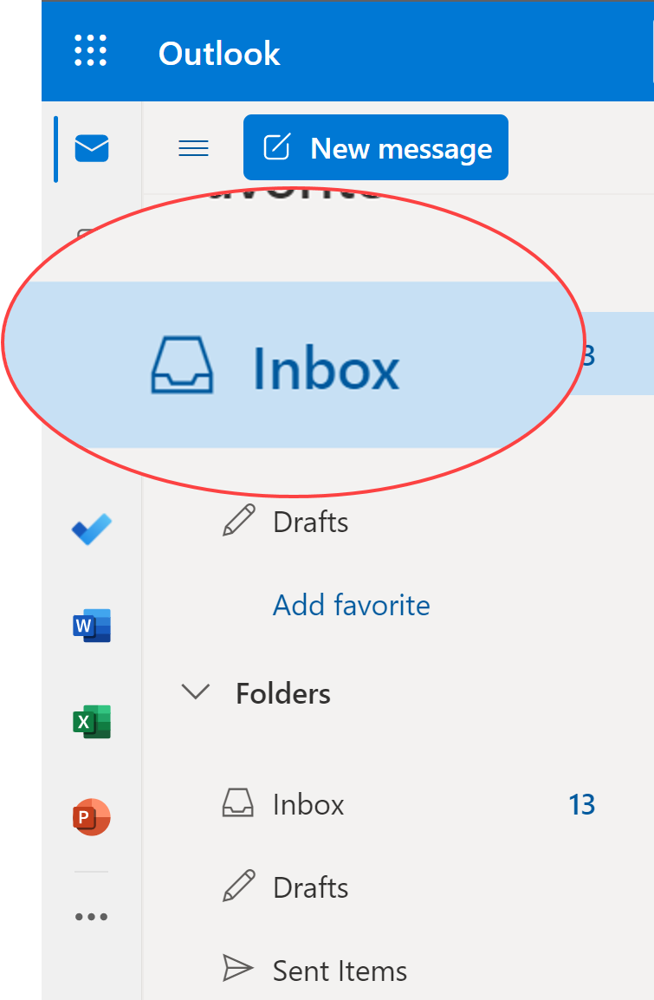
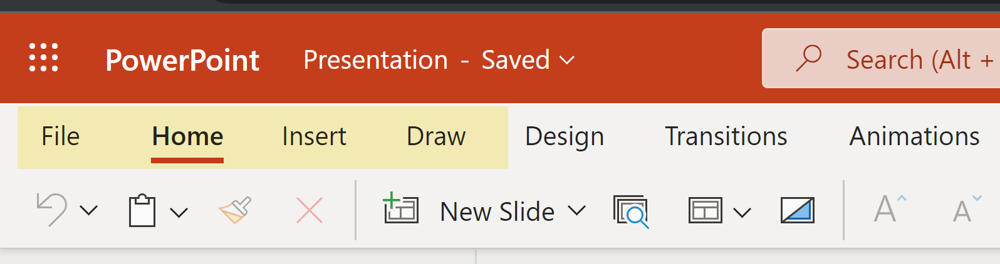
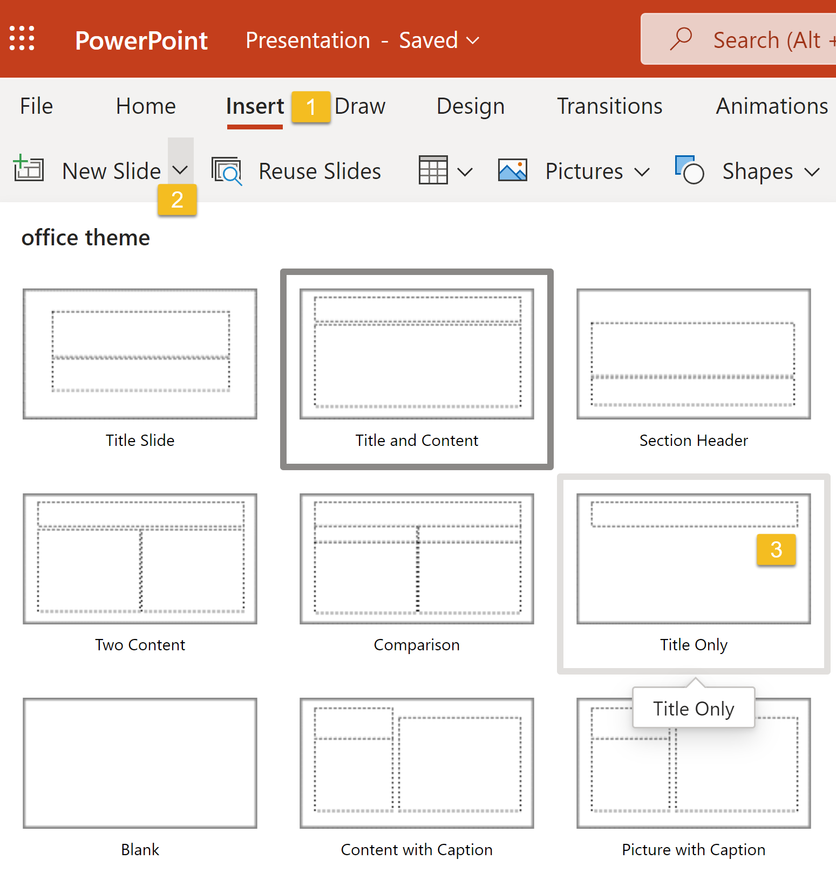

How to create a perfect screenshot
Go through some fundamental steps to make sure your screenshots look the best way possible. Find out what will be the best format, size, layout and how to edit your images.
Let’s go through some fundamental steps to make sure your screenshots look the best way possible.
Size
- Don't make your image too small. It's fine for an image to take up the full width of a page.
- Screenshots at full resolution often take up too much space on the page, so you may have to resize them.
- In general, don't use an image that's wider than the column it appears in.
- Consider how the image will look when printed out.
Format
- When saving your screenshots, choose the PNG format over JPEG. The latter is a compressed file format, while PNG allows lossless compression hence more legible text and crisp lines.
- For diagrams (architectural drawings, flow diagrams, and so on, as distinct from screenshots), use SVG files if possible because SVGs stay sharp when you zoom in on the image. If you don't have an SVG file, then save your image as a PNG file unless you have a good reason to use a different format.
- If you are adding some graphic elements to your screenshots, it is a good practice to keep the original pictures to edit them easily.
Cursor
Make sure your mouse cursor is not visible in your screenshots. The best way to hide the cursor is to choose a screenshot app that turns your cursor into a frame-drawing tool. In that case, there will be no visible pointer on the screen. If you use a standard shortcut, the cursor will most likely appear in the shot.
Editing
| many extra details | what we really needed |
|---|---|
|

|

|
- fullscreen images are usually pretty heavy in terms of the file size, traffic and loading time
- small elements will hardly be visible as such screenshots need to be resized to fit in the text
- fullscreen image content is more difficult to control - there's a higher possibility of accidentally leaving some PII in the picture
✅ Try to do not scale the image too much afterward. But if you must, avoid the dreaded pixelation. Try resizing your picture or screenshot in an image editing program. Keep the same ratio of width to height, and then add it back into your document or presentation.
| small, not visible elements | resized window |
|---|---|
|

|

|
| impossible to understand what tab is opened | tabs are visible |
|---|---|
|

|

|
✅ Do not use effects like shadow, borders, etc. They usually look ugly, cheap, and generally don’t fit well with documentation and books. The trouble with shadow effect is they look good only on a particular background.
✅ If possible, use a transparent background, because you don’t know which background will have your reader. Docs are outputted to various formats - HTML, PDF, EPUB - with various backgrounds.
✅ Use a consistent style of screenshots with enhancements (like callouts, text) and drawings - same font, size, colors, design, etc.
✅ Use the same screenshot tool, app version, browser, environment, etc. across your docs and team of tech writers.
Graphic elements on screenshots
This may seem like a no-brainer, but adding arrows, numbers or other markings to your screenshots can make them more engaging. Make it obvious which details are important and require the user’s attention. Use bright colors to point out important parts so that readers don’t have to peer at your screenshot to understand what button they need to click or what link they need to follow.
- Pointing arrows at an object or circling it works best. Pick a color that would
stand out from the rest of the image. Choosing the color from the user interface
palette will make it not visible.
- Stick to the same color and shape of the mark-up tool — this will keep your marks and notes easily recognizable and the overall style consistent.
- Pay attention to proportion and symmetry.
- An alternative way of focusing attention on an element is zooming it in. That
works great especially with large screenshots crowded with small details.
- Another useful technique is the highlight, which is supported by some screenshot
tools. This is what it may look like:
- You can also add some step numbers on the screenshot:
Layout of images on a page
- Don't try to place an image manually; for example, don't use a style attribute or other workarounds to control the image's left/right justification or the margins around the image. Instead, for example, use your site's standard CSS image styles.
- Don't make your image too small. It's fine for an image to take up the full width of a page.
- Consider how the image will look when printed out.
- Don't use an image that's wider than the column it appears in.
- Screenshots at full resolution often take up too much space on the page, so you may have to resize them.
- Don't center the image on the page.
- If you are using HTML don't put the <img> inside a <p>.
Text in figures
In most cases, avoid embedding explanatory text in screenshot graphics; text that's incorporated into a graphic hurts accessibility and searchability, and increases localization costs if figures are localized. If you must embed text in an image, then be sure to also provide the same information in a form that people with visual disabilities can use, such as a figure description.
When you must include text in figures and images, use the following guidelines:
- Keep text brief, avoid complete sentences and punctuation when possible.
- Don't embed figure descriptions or captions in the figure or image. Instead, put figure descriptions and captions in text following the figure.
- Don't create new abbreviations to condense text.
- Use sentence case.
- Use numbered callouts in figures to help you write a figure description, but don't use callouts for detailed annotations.
- Use full trademarked product names.
Text associated with images
✅ Always introduce an image with a complete introductory sentence. You don't need to introduce screenshots that immediately follow procedural text that describes a UI.
✅ Use an alt attribute to provide a text alternative for the image in context. Alt text is used by assistive technologies, such as screen readers, and might appear if the image cannot load. However, if the image is decorative (not informative) or it's provided only as a visual aid for information that is already expressed in text, then provide empty alternative text (alt="") so it will be ignored by assistive technologies. The presence of alt attributes helps support navigability in screen readers, markup validation, and search engine optimization.
- Don't include phrases like Image of or Photo of.
- Include punctuation. When screen readers encounter punctuation, they pause before continuing.
- Use consistent alt text for repeated instances of an image, such as controls, status indicators, or icons that appear multiple times in your document.
- When possible, avoid using all-caps in alt text. Some screen readers read capital letters as each letter individually.
- Introduce diagrams in the text, not in the alt text.
- Don't use figure captions to replace alt text.
- Write short, descriptive alt text in 155 characters or less. Use full sentences.
- If the image presents more useful information than you can fit in the 155 character limit, include a brief summary of the image in the alt attribute and also include the longdesc attribute to link to a more extensive description of the image. The longdesc attribute value should be a link, not text.
- Alt text should consider the context of the image, not just its content.
- Use the form "<b>Figure NUMBER.</b> DESCRIPTION".
- Use punctuation in figure captions.
- When you refer to a figure, don't use spatial descriptions such as "the image below." Instead, mention it by number. For example: "... as shown in figure 1." Don't capitalize the word figure in a reference to a figure, except at the start of a sentence.
- Don't include the figure caption in a sentence referencing the figure.
✅ A figure description is text that provides a more detailed explanation of information represented by a figure. Any new information should be conveyed through text, and not introduced in a figure or image.
- Create a text that conveys the same information as the figure.
- Use when a figure caption doesn't convey the purpose or complete information of the figure.
- Use punctuation in figure descriptions.
Picture filenames
The filename is crucial for easy handling, organization, localization to other
languages. Good filename describes what is displayed in the picture. There is
nothing more annoying than working with images named as
image3712.jpg. The good filename is, e.g.
web-browser-settings.png,
disabled-save-button.png etc.
If you write multilingual documentation, many (if not all) pictures need to be
language-specific. Adding language local code to the filename is a good idea. Somes
system, like Sphinx, have support of multilingual documentation and they recognize
locale-specific images with locale code in a filename. You have
save-button.png, save-button.he.png and
save-button.de.png. If you build docs for Hebrew (he), Sphinx
picks up save-button.he.png, for German (de)
save-button.de.png, and save-button.png for
all other locales.
To prevent problems on case-sensitive platforms, always use lower-case in image filenames. Even some web servers might tell 404 Not Found if you call in URL “img/Save-Button.png” instead of “img/save-button.png”.
Keep originals
- Some screenshots are published as-is, but often you want to improve their value with callouts, texts, and similar enhancements. Or you draw an illustration for your book.
- To build documentation, you need to export it to a plain image format like PNG
or SVG. However, you should keep the original artwork source format for future
editing and localization. For example, keep
.pptxof flowchart crafted in PowerPoint,.aisource file of Adobe Illustrator diagram,.snagfor Snagit screenshots, etc. - Store (and version) these picture source files alongside with the docs. A good name for such a folder is artwork or originals.